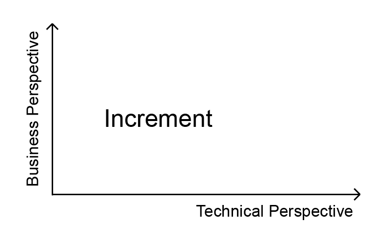

Subscribe RSS Feed
cynical: scrum
Scrum, a cynical definition
Scrum: A highly selling agile framework that is based on a prerequisite that is impossible to fulfill: knowing how long a chunk of work will take to complete [1]. It is all so great!
- Autonomous teams that are told to do Scrum.
- Early feedback and improved communications, but only after two weeks.
- “Measuring the velocity” by relying on estimates. Everyone knew this already, when the estimates were done.
- A Scrum Master that doesn’t require any skill or experience in order to have “master” in his job title.
- The highest adoption of all agile frameworks, except no one “really” does Scrum, because it “doesn’t really fit in this particular context”, and therefore “we are doing Scrum OUR way”.
[1] Gray, Aaron, A criticism of Scrum
Experiment: Jekyll
Introducing Jekyll to this page
Since 2 years I am operating this blog as pure HTML, CSS and a little bit of JavaScript, first on an Apache webserver, then on Github Pages. Recently a friend asked, if there would be a RSS feed for my blog, since he finds my cynical glossary a cool idea. I didn’t have one (I have one now), so I did a little bit of research about RSS in general and then I stumbled across Jekyll (again). I knew that Github Pages supports Jekyll themes natively, but never gave it a try. It seemed easy to generate a RSS feed automatically with the plugin Jekyll feed, so I gave it a try. First I had some difficulties to set Jekyll up locally, I think due to some Ruby versioning issues, so I started by just pushing my Jekyll code to Github. I could see changes quickly in case the compiled, but destroyed my blog if they didn’t, so.. I needed to get it running locally soon.
But first, I wanted to experiment more. The documentation of Jekyll is really good and readable to get started, and I found it quite easy to set everything up. I extracted my blog posts into seperate files markdown and html files, that are named after a certain pattern and located in a certain folder. Jekyll then understands that those texts are blog posts, and enables quite a lot of cool features for blogging such as the RSS feed plugin, I just had to turn it on. One aspect I particularly liked about Jekyll was the usage of liquid, which provides conditions, loops and variables/objects for HTML. For example: Instead of repeating HTML for the title of a blog post, I could simply extract that and use the variables of my page object:
<h1>
<a href="{{ page.url }}">{{ page.title }}</a>
</h1>
I put this in a loop, together with the heading, text and signature of the post, and immediately all blog posts were rendered the expected way below each other. Jekyll generates static HTML out of the liquid HTML, so that it can be deployed on a static webserver. Liquid feels like improved HTML. I worked a couple of days (not consistently) on the transition of my blog to Jekyll, and now I have some handy new features, that were easy to build, add and/or configure:
- The requested RSS feed, subscribe if you don’t want to miss any post, read this if you want to know what it is
- Blog posts have categories
- Blog posts can be filtered by category, just use the categories listed at the top, or click on the category in the signature of the post
- Blog posts have static urls (e.g. https://robertnickel.online/2021/01/06/experiment-jekyll.html), just click on the title of a post to go there.
- I removed the “Projects” area, since it is a category now, that can be used as a filter
Conclusion: Jekyll is very lightweight, for example in comparision with WordPress. It is incredibely well documented and easy to start with (just push something to Github Pages). The terminology is intuitive and the usage of liquid enabled me to not repeat myself and have a scalable solution (in terms of adding content, categories, rss etc.). I recommend it!
EDIT: Right after publishing this post I realized, that Github Pages only supports certain plugins for Jekyll natively. Therefore, I had two options:
- Revert the category pages related changes and not use the plugin.
- Keep using the plugin and avoid using the Github Pages native Jekyll by just refering to the generated static code.
I chose to go with option 2 and found out that I have to create a folder called /docs in order to make it referable as document root for Github Pages. Since I want to avoid having multiple repos or branches, I then created a git pre-commit hook that copies all the files from the generated /_site folder into the /docs folder (which is refered to as document root). I find it odd, that I cannot define custom folders, since I would rather have named it “static” or similar. Anyway… using unsupported plugins should now be fine again. 🙂
cynical: doing agile
Doing agile, a cynical definition
Doing agile: We do understand, that every team member is selfish, has poor communication skills and insufficient knowledge to solve an undefined problem that everyone pretends to understand in a predictable amount of time.
Therefore we are shifting the focus from believing the experts and their plans to learning, experimenting and repeatedly checking something useful gets done. And we do test-driven SAFe T-shaped daily pair programming Kanban with our Scrum PO.
P.S. We don’t do documentation, because we value working software more.
pigeonhole principle
Too many pigeons for the holes?
While learning for my discrete mathematics exam, I stumbled across the pigeonhole principle. A pigeonhole is where pigeons like to sit. I started liking it, when I discovered, that it is so obvious in the metaphor but, at least for me, took a while to become able to really apply it. The pigeon metaphor goes like this:
If there are more pigeons than pigeonholes, at least one hole will host at least two pigeons.
🐦 – 📭
🐦 – 📭
🐦 -´
Obvious, but
How many people in Sydney have the same amount of hair on their head?
Lets estimate the maximum amount of hair: 150K. In Sydney live around 5.3M people. Preliminary conclusion: At least 2 people in Sydney have the exact same amount of hair.
The pigeonhole principle goes further: It also tells us, how many people (at least) in Sydney have the same amount of hair. Just divide the pigeons by the pigeonholes and ceil the number.
5.3M / 150K ~= 35,3 ceiled to 36.
Conclusion: At least 36 people in Sydney have the exact same amount of hair.
I believe there are many real world situations, in which the pigeonhole principle makes a lot of sense, and I cannot wait to stumble across some of them. To be honest: For this example, it would be more effective to count (or estimate) the amount of bald people, assuming they are the biggest group with the same amount of hair.
Homework: At my wedding we had 125 guests. There were 6 different main courses and 3 different side dishes, and each guest took one main course and one side dish on their plate. How many people at least had the exact same meal?
A lumberjack metaphor
Software Engineers are Lumberjacks, Features are Trees
To illustrate 12 very important aspects of agile software engineering, I want to use the oversimplified metaphor of lumberjacking. A forester, who represents the product owner, leads a team of lumberjacks, which is the development team, to the most important trees to cut down. The trees represent features or stories. How is this metaphor valuable?
- Segregation of responsibility: One marks the trees to cut, the others define how and do cut them.
- The lumberjacks who have the strength, skills and tools to cut down trees, although not everyone is on the same level of experience, so they help each other out. Some trees can be cut alone, others need to be cut together.
- The forester pays the team of lumberjacks to cut down trees, so that he can futher explore the infinite forest of valuable trees.
- In order to collaborate, mutual respect for the counterpart’s discipline is required. Discussions and proposals are valuable and humility is a prerequisite, but the circles of competence are known and respected.
- The lumberjacks are able to state concerns: It could be dangerous to cut down a tree, because of uncertainty where the tree will fall. Risks, depending on what is on the line (another tree? A human?), need to be evaluated strategically and should be reduced on the long run.
- The forester can ask questions: Do you think, we can chop this tree safely already, or do we need to chop another tree first?
- CYA concerns are resolved easier: It is either the wrong tree, or it is the wrong way to cut it down.
- No one is perfect: Sometimes a tree is mouldy (=> wrong feature), sometimes the chopping takes longer than expected (=> unexpected technical complexity).
- Some trees are in the way and need to be cut down in order to get to the ‘good’ trees.
- The forester doesn’t tell the lumberjacks to sharpen their chainsaw or axes (=> write tests, update IDE’s etc.): They know and do it themselves, better than the forester could. They will do it within the working hours.
- It is dangerous to cut trees. It is important to have safety precautions and stick to them (=> QA).
- After a tree is chopped, the work is not done (=> definition of done): It needs to be cut into smaller pieces and carried away. Then the wood goes trough a number of procedures (=> build pipeline) in order to be made valuable. Sometimes the value is to give shelter, craft furniture or build a ship, sometimes it just gives comfy warmth in front of a fireplace. The foresters intention might materialize here (=> business value).
To be honest, I do not know so much about lumberjacking or foresting, so forgive my oversimplification and maybe misconceptions. The goal is to write about software engineering metaphorically, and I find some concepts easy to understand using these wooden examples. I have a more detailled and less metaphorical article about the segregation of responsibility here.
Behavior-Driven Development
TDD to BDD - Principles and Tools with an Impact on Business Value and Communications
For the module “Agile Procedure Models” at my university, I write an essay about BDDs origin, principles, advantages, evaluation and how to approach it. Since we need to hand in a PDF version and a markdown version, I decided to go the extra mile and have a always up-to-date version of it hosted as Github Pages website here: bdd.guru,
so that I can receive early feedback from other readers and the professor. Please send me a mail (robert.nickel@aikq.de) if you have any feedback for me.
Update: The paper is done.. I think it is worth reading. Feedback is still valuable to me.
I then realised, that it is generic enough to use it for all future essays and thesis’, so I extracted a template repository which makes it really easy to get started with a new paper, export it as HTML and host it as Github Pages website with every commit and additionally export it as PDF using pandoc and the latex pdf engine with minimal effort. Find it on Github to experience the same ease.
Masters Degree
Im doing my masters degree now
After finishing my bachelor of science in “Computitional Visualistics and Design” in 2016 I worked for well over four years as a Software Engineer at Daimler TSS GmbH in Ulm and Stuttgart. This month I started studying computer science with focus on software engineering at the HTWG Konstanz. So far, I really like it.
Recursion
Building this page
I’m building this page myself, this is not a wordpress template. I consider my self a minimalist, this regards belongings, wording and coding. Why do I need thousands of lines of php and javascript and a template, if all I would do with it is display some really simple text and images?
This text is a simple html paragraph in a div, styled with 3 lines of css. Its simple to maintain and read, and it loads and renders very fast. It is a good example for the difference between simple and easy. It might would’ve been easier to setup wordpress (or similar) and just use a template. But that wouldn’t be simplest possible solution, I would have to update wordpress on a regular basis, deal with licensing, support php etc. It is so much unneccesary complexity. This way I had to put some effort into it, but I could avoid complexity and gain simplicity, even though its (maybe) not the easiest way.
You can find the source code here. If you find typos, feel free to send a pull request. 😄
A Telegram Bot
I built a Telegram Bot for pupils/students schedule (MyScheduleRobot)
My younger brother tried to build a telegram bot, that gives him some information about his schedule, so he started, but stuck due to some infrastructure problems. I attempted to help him, and then basically took over the whole thing. I used claudia.js with its deployment and bot-builder features, and deployed it to AWS Lambda. Document based persistance happens using DynamoDB.
You can test the bot here (imagine you are still at school): t.me/MyScheduleRobot
Now some functional details: This bot is a schedule bot, it is not a calendar. To make the difference, and therefore what it does and what it doesn’t, more clear:
| Schedule | Calendar |
|---|---|
| Days repeat every week | Days are different every week |
| Timeslots repeat every day (🔔 rings) | Timeslots are vary a lot |
| Compare this | with this |
{kind=link}
{kind=link}
A short high-level summary is:
- Define all the subjects (plus room, teacher etc.) you have, the timeslots (that repeat every day) and your timezone
- Configure your schedule, that is e.g. which subject you have first on monday, which second etc.
- You get information for the whole week, just today, tomorrow or even now by chatting with the bot
Use /help to get the detailed and always up-to-date list of things the bot can do.
Lessons learned:
- Applying KISS principle is good.
- ClaudiaJS, AWS Lambda and DynamoDB are really cool technologies.
- One doesn‘t get the telegram users timezone for free, you have to ask for location permission and resolve it with a third party service or ask directly for it (as I did here), which is weird, because a lot of people do not know their timezone.
- Don’t expect anyone to use your bot, because of finding it coincidentally. Marketing a telegram bot is hard and reduced to the group of telegram users (surprise)!
- Take a lot of time to explain the purpose of the bot really well. It should do only one thing really well](https://en.wikipedia.org/wiki/Unix_philosophy#Do_One_Thing_and_Do_It_Well) and creating another bot for other things is free.
You can find the source code here
Closing feedback loops
Hammurabis understanding of evolutionary loops
A long time ago, King Hammurabi of Babylonia, wrote a code of law, the so called Code of Hammurabi, which holds some surprisingly effective thoughts regarding the contract between a landlord and a house builder.
„If a builder build a house for a man and complete it, (that man) shall give him two shekels of silver per SAK [a length unit] of house as his wage.“ [1]
A bigger house costs more money. But isn‘t it interesting, how the house builder is not paid depending on the time it took to build it? There is no hourly rate, which means, the landlord wont get any unhappy financial surprises, which is good. But wait a second! Doesn‘t that mean, that a house builder will do anything as fast and cheap as possible, wouldn’t that be a catastrophy? He might put those people in danger, who want to live in this house later on. The key question is: How can the owner of the house assure, that it has a good quality, if he only pays depending on the size of the house?
Hammurabi thought about this, did some risk management, and solved this „quick and dirty“ approach by the following law:
„If a builder build a house for a man and do not make its construction firm, and the house which he has built collapse and cause the death of the owner of the house, that builder shall be put to death. If it cause the death of a son of the owner of the house, they shall put to death a son of that builder.“ [2]
There is no need to explain, that the house builders will do their absolute best to prevent houses to collapse and kill someone, because they have so much skin in the game for an unlimited amount of time, meaning they can be killed because a house collapsed, they built 20 years ago. How exactly assured Hammurabi the quality of houses? By closing a feedback loop for the craftmanship of house building. Those who are really good at building houses will be able to keep building houses, while those who fail doing that will be stopped putting peoples live in danger. It might sound like a cruel practice from our modern cultural perspective, but it led to ridiculously good houses, there is no doubt.
The house building quality solution is not a solution for house building anymore, maybe because of technological advancement and regulations, but I believe we can learn a lot from Hammurabis structural solution here. He shows us, that we need to close the feedback loop and reduce its complexity. This is, in my opinion, the single most important task of agile software processes. What I mean goes far beyond „You build it, you run it.“.
One example: A software architect, who does architectural work on a project and then leaves over to the next project, has zero skin in the game of the old project, and is therefore hardly able to improve. In a frictionless world, this architect would maybe get verbal feedback from people on the lower technical levels, that experience the actual haptical feedback that result from his decisions. But in the real world, complexity, reputation and hierarchy fog this verbal feedback, which complicates improvement for the architect further. And this is just one example for the concept of closed feedback loops, and therefore having skin in the game.
Lets enhance our motto: „You build it, you run it .. and you bleed for it.“, where bleeding is metaphorical for all the (negative) consequences that result from our decisions. It may be a phone call in the middle of the night, it may be doing overtime that originates in our own mistakes or might be getting fired. Especially the last point might sound extreme on the first glance, but think about this on a theoretical level first: Do you really want to build a team, in which people don’t experience negative feedback on their own actions? Do you prefer working with people who survived the sometimes brutal reality, or would you rather work with people that have set up (and used!) safety nets a little too often? Please get this right: I am all for improvement that is based and being able to fail and learn. In order to be able to innovate, it is crucial to have playgrounds with limited consequences to failure. On the other hand I am worried, that an extensive lack of consequences will lead weak software craftsmen, who build houses that collapse.
And, of course, be aware! Don‘t let someone else put YOUR skin in HIS game. It has happend more than once, that a release plan, that was promised by a project manager led to overtime for engineers, or that product owners are blamed for quality issues, that were caused by „I will fix it later“ minded engineers. See my article The Two Dimensions of an Increment to get more detail on this topic.
I found the inspiration for this thoughts in the book Skin in the Game [3] by Nassim Nicholas Taleb.
[2] Harper p.81, §229, §230
[3] Taleb, Nassim Nicholas. Skin in the Game, Random House, 2018.
Segregating responsibility
The two dimensions of an increment
This post discusses the segregation of responsibility of an increment between technical people and business people. I experienced a very unclear understanding of this topic on both sides, which usually leads to wrong decisions and poor quality. I believe the proposed model will lead to a better sense of responsibility and therefore greater results.
Lets start by some definitions: An increment can be everything between a whole product, that was developed for years to a small feature that was developed in the last iteration/sprint. It has many dimensions. For this model we need only two of them: the business perspective (also referred to as functional), and the technical perspective.

Business people are those that work on the business perspective of an increment, by defining and refining the problem, doing business research, talking to stakeholders etc; they answer the “what?”. In scrum these are the product owners (POs). Technical people on the other hand are those who tackle the technical perspective on an increment. They develop a solution to a problem, by answering the “how?”. And they work in a team, why not call them “tech team” for this article.
If the tech team says, they want to do a technical task that does not directly provide business value, but is necessary to keep the system alive, what should happen? Should the product owner agree to do it?
The tech team as a whole is responsible for everything that happens on the technical dimension, including a sufficient level of quality (“We do not deliver Shyt!”), operations and security issues. Other examples are architectural, programming language and cloud platform related decisions, and there are many more. Since it is “their” solution to the problem, you call the tech team in the middle of the night, when the software isn’t running! Additionally, they are the only ones that know how to fix it.
Therefore, the business people should not actively agree to the technical task, that was mentioned earlier; they shouldn’t bother at all! The questions that are asked on the business dimension are often similar to “What do we need to do?”, “What is our (functional!) priority?”, “When will we be done with this stage of the backlog?” and “Should I take this as one feature, or rather split it into two?”. The business people should decide everything, that belongs to the business perspective, and shouldn’t decide anything that does not belong to that dimension. If they would do the latter, they would take away the responsibility of people, who are better at doing that, which is a guarantuee for a loss of value from a wholesome standpoint. The business peoples decision making power starts and ends at business questions.
This is a very clean and structural (and massively simplified!) solution to a typically “unclean” problem. I have worked with engineers who believe, it isn’t their responsibility to take actions on technical topics, because they do not feel responsibile. The technical debt piles up, which leads to quality issues and paralyzation in the development process. But they want to get told by the business people, or at least get allowance, to deliver good quality. That is not what being a craftsman and taking responsibility looks like.
On the other side, I have seen customers and managers, who believe that the business people are responsible for everything, even technical things like architecture and quality. And of course, as common as the “unresponsible engineer” is the “I-will-take-it-all-business-person”, who wants to decide on huge technical decisions or backlog items based on a two minute explanation. This persons often “allows” the tech team to decide on the smaller issues, because he “trusts” them with that. He mixes up the two given dimensions of an increment with importance or size.
To make this more clear, think of the following example: As a member of the tech team, I have to keep my operating system up to date and secure all the time. On the long term, there is no way around it in order to be able to develop a feature, and I am responsible to do this. The very important question here is:
Why am I responsible for doing this very small technical thing?
Is it because it is a technical thing to do, or is it, because it is a small thing? If the answer is the former: Great. Scale that up. You don’t need to read this any further. If the answer is, because it is a quick and small thing, than you have that unclean structural problem that was mentioned above. There is no exact way in determining beforehand if a task is above or below a given threshold in size, complexity, importance, criticality etc. It is a subjective and discussable thing, that depends on experience, perspective and even the mood of people. At this point one could be tempted to think: “If it is close to that threshold, I will know if it is in my area of responsibility or not.”. Yes, you might, but someone else might have a different perception, and this relies by far to much on that subjective metric. A very clear segregation in responsibility, between the business perspective and the technical perspective (and people who are well aware of it) is a good thing that leads to great results in software development.
One is responsible who has the power to make decisions, is affected by the consequences and has to deal with the reaction to those.
In order to embrace the segregation of responsibility, I propose that you start by cleaning up your backlog (or any other form of todo list you have). Group the items in “functional” and “technical”. If some items are on the edge between those two, focus on the functional aspects first and kick out the technical questions or decisions, they will follow. The functional items are the reign of the business people. If you are one of them: This is the area you can make decisions on, and you have to take the full responsibility for your decision. This is your area of influence, doing a great job here will be easier without having all those technical aspects in mind.
Now have a look at all the technical items. What you see is the reign of tech team. If you are part of the tech team: This is what you decide and take the responsibility for. Ask yourself for every legacy item you have: Which problem does my technical item solve, and is that really necessary and relevant? Clean up and discuss it with the other tech team members. You have to see the whole picture (the beyond-sprint-perspective), because you will be accountable for it.
Just to get this right. I am not proposing to reduce the communication between business people and technical people. As a technical person, it often is a good idea to challenge business requirements. The technical people will sometimes have to justify, why they decide for a specific framework or why you want to switch the programming language etc. But by all the technical decisions you do and execute, you should always (at least every iteration) also deliver things. Have in mind: the tools you use, are tools to solve a problem. Tools are not useful without a problem to solve. Talk to each other :-)
One concern I have often heard: How can you take away the responsibilty for big and time consuming technical backlog items from the business people? They will need to meet agreements and make promises about release dates etc.! That is a valid question, and the answer is underwhelming: A technical decision is equally not in their responsibility, as protecting the engineers from getting hit by a bus. They simply cannot control it, and they shouldn’t. At this point, business people have to let go the urge to control that and trust the tech team, which will deliver solutions, which will lead to more trust. It is an upward flywheel.
I hope that this clarification about the dimensions of an increment, that should be taken into consideration when taking responsibility for a software project in any role, helps to build highly valuable software with less stress for every involved person. Please keep in mind, that the more formal segregation I propse is no silver bullet. It is just a small piece in the big puzzle of software development, that can only work, if you have a non-broken tech team, that is abled and willing to take responsibility.
Scaling innovation
The McDonald's of Software Development
Often when I tell people, that I am a Software Engineer, they explain their idea of a game changing
app, but don't know how to make it real. People backtrack when they find out about the cost of software
development, because they fear the risk and often have no clue about this whole craftmansship. This does
not
mean, that the ideas are worthless, many of them are really good and some are actually game changing, I
believe. So there is value, but no one picks it up.
Why is there no McSoftware that paves the way for low-budget projects to become real? It could be a
franchising company with a world wide network of managers and lawyers, a great branding and very
efficient
value streams, just like the fast food restaurant equivalent McDonald's.
I thought about this a lot, especially about the question, how I could build this. And I came to this
result: If it would be achievable, someone would probably have achieved it already, or at least
something
similar. But that is not the case, as far as I know. The reason: software development barely scales. The
software itself scales indefinitely, and therefore there is no reason to produce the same thing cheaper
then
the competitors. Software breathes innovation. And innovation does not scale at all, that is in its
nature.
Innovation in general is the effort of many but the success of few, and those Einsteins who get humanity
to
the next level might get the prestige and/or the money.
What can we get out of this? The bad news are, that you will need to have the game changing idea
and
the resources to make it real. But on the other hand, due to higher level programming languages,
reusable
components and frameworks, better ways of teaching and learning technology and more digital natives with
upcoming generations, it is getting cheaper and more accessible over time to develop innovative software
that changes the world.
Thinking humble
The quality of an answer to an open question
I used to work in the same team for more than 2 years, and now I left and joined a much smaller team in
a
green field project. We had the chance to set up parts of our methodology on our own, and one part was
the
question: "How do we as a team want to estimate?".
It was consciously expressed as a very open question, and a colleague of mine
immediately responded: "In hours please!". Before this project, she
was in a project where one story point was equal to two hours of work, and you get into
trouble, if you take more than the estimated time. The improvement/simplification she proposed was to
not
divide by two (which sounds like a random number in this context) when estimating story
points instead of hours. I do not want to discuss this way of estimating non-linear work here.
The question she answered was not: Should we estimate time, effort, complexity, risk, business value or
something else, on which scale (Fibonacci numbers, natural numbers, binary..) and in which unit (hours,
days, story points, T-Shirt sizes, our own scale, apples..)? Her perspective to the question was one
dimensional (which factor per hour), in a multidimensional answer-space. I believe her answer was smart
in
that one dimension, but not useful, when considering more of the dimensions we know of.
This is not her failure or stupidity, it is her experience with this world of "agile" software
development,
and was extended in the next few minutes after other colleagues told their opinion.
It made me think: Am I answering multi-dimensional questions on a one-dimensional scale? Of course I do,
basically everything I think of,
I have to think in words I know and cannot think in languages or other concepts I have never heard
of. In a lot of open questions, there are a lot of answers from dimensions I would never even consider,
but
are equally valid or much better than those I would consider.
This means, that the quality of an answer to an open question is not defined by the number of
other
answers
that were considered from the same dimension,
but by the number of dimensions, that came into consideration in the thinking process.
My colleague could not have found a great solution by trading off the number of hours per story point to
be
1, 2, 3 or any other number, but we could find a good solution together, by exchanging thoughts and
experience
with other people, that do consider other dimensions. It is not easy to think out of the box, I
therefore
propose to visit other peoples boxes and have a curious look out of their windows. Also dare to step out
onto their balconies. I think this is a basic concept in teamwork, friendship and familiy.
Rethink everything
Refining the whole product after 2 years.. and maaan, where did we go?
A lot of people do retrospectives. A lot of teams do that on a regular basis. They sit down, think about the last two weeks or so, identify problems they have had and find action items to improve. That is super cool. What we did today, went one step further: We thought about the problem we tried to solve in the past two years with our product. Having the problem in mind we brainstormed on how we could solve the problem, not thinking of our current solution at all. We reset our brains, including all of the domain language, business rules and other burdensome legacy concepts. This. Was. Awesome. The concept: Let us do two full day design thinking-ish meetings. First day: Brainstorming, throwing "the big five "topics out. Then splitting up and grooming in pairs and presenting the results to everyone. Second day: Trying to be more structured and start thinking on a high level, considering the ideas of the first day, and refining into more detail. Result: Eventually we found a cool way to solve our business problem, which was not related at all with the solution we had in place. It was totally mind-blowing, how we could do the same stuff we did the past two years a lot better than before. Next steps: By mapping the status quo with the target state, we want to identify the concepts that are different and those, that are similar, on which level, and why. For those concepts that are far apart: Which were the historic reasons to make the decisions, that led to a the status quo? Is the solution, we have in our heads now, really better, than the one, we have implemented? For those areas, where we had no shiny new ideas: Were we really open minded, or is it really the only way to solve this problem? Then we go quickly into the direction of making things concrete, by iterating over all the necessary steps: Starting from clarifications with the legal department, marketing people and other stakeholders, getting a more precise understanding of the solutions we are going to implement, having scribbles of the screens, implementation in code and so on.. as meantioned: all iterative. Okay, now the truth: It was not awesome at all. It was super difficult to let go all of the known, and most people, maybe all, actually did not manage to rethink concepts from scratch they had already solved. It actually hurt to see a lot of complexity, which we put a lot of effort in, just flushing. People had developed close relationships with "their" solutions, and felt attacked by questioning everything. We did not finish within the time we expected, and people questioned, if we should actually continue with this format, because all of it was so heavy and took so long. And then there was this constant: "Man, why didn’t we do this one year ago?"
Mob Programming
I talked about Mob Programming
I gave a lightning talk @ Fullstackfest 2018 Barcelona, and yes, I confused the words “Requirement” and “Prerequisite”. Shit happens.
Being cohesive
Only split a story, when it is too big?
Story Estimations in the world of agile software development is, in my opinion, a totally underrated topic*. It has major influence on several important topics, such as the agile mindset of the team, the trust between the PO and the development team, and how to deal with pressure. I observed several biases related to this topic, and today I am going to write about one of them, the "Only split a story, when it is too big" bias. Assume a team, that is estimating stories** with Fibonacci numbers (0,1,2,3,5,8,...) having an average velocity of 10 story points (SP) per sprint. The rule behind the bias says: If a story is bigger than 8 SP, it is too big, and it should be split into two stories. Otherwise it is "small enough"and can stay as it is. There are several advantages of this, especially from the PO's POV: - You have less work, less text to write and less items in the backlog. - You can cut and merge the stories based on your feeling. If you have to split it, the estimation of the team will tell you. If no one tells you, it is okay. - You do not need to bother about details (from a business POV!) too much. Since there is barely any space for details, they can stay hidden and will be handled by the team as soon as the story is being implemented. Here are my objections: First, about the flexibility: The number of stories in the backlog might be small, but the PO cannot change the amount of work by putting things together in one story instead of two. What he instead does, is burying the flexibility to postpone the less important part of the story and shift the more important part closer to the sprint backlog. Moreover, just think of the following situation: A big story was planned and not split, and while implementation, the team found out it is not only big, it is huge, so they cannot do it in this one sprint. In most cases, the team will continue with this story in the next sprint, and questions like "How many percent of the story are done?" or even worse "How much story points of this story have you already achieved?" might pop up. Having stories for more than one sprint leads to frustration for the development team and immobility for the PO, who has no good options, then putting the story into the next sprint again. You might have heard of the "divide and conquer" strategy in other contexts, but here it fits perfectly as well: By dividing stories as often as possible, you will be able to conquer the more important parts of the product first and leave out all the rest for later. Just as a side note: I have heard sentences like "…but if the PO doesn't want this flexibility, it is his problem.". Dear engineer with this opinion: If you try to make the life of the PO easier, he will try to make yours easier; help your PO! Second, about reducing the amount of work: A PO, who is lazy in writing stories, and has rather one long story instead of to short stories, doesn't invest enough attention into the most important parts of his job: Leading the work of the development team into the direction, that increases the value of his product. At the end of the day it is cheaper and less time-consuming, if the PO figures out the details from a business POV upfront and puts them into stories. Dear PO, who thinks that he can "save work" by "just leaving as it is" and "seeing what the team thinks": You are generating unnecessary work for the development team, and for yourself; do your homework instead! Third, about the user feedback: It is a great strategy for products, that are already live and released, to monitor, which features are actually useful for the users and which are not. With smaller stories, the feedback loop gets smaller as well. The user and his wishes and needs related to the product can be understood, and the solutions, the user really desires, can be applied. The PO will be able to see, if his idea is a good idea, before investing a lot of time and money into developing it. And even if your product is not live yet: If the stories are small, the PO will get the feedback from the team, of how they understood the story, early. Therefore, he can react to misunderstandings und surprises early and reduce waste. Fourth, about the motivation: This fourth point might not seem to be the most important one, but I still decided, to note this down: What do you think feels better for all involved, saying "There are 3 stories done and one is started", or "The one (huge) story this sprint is almost done". Obviously the first option sounds better and makes people feel better, since achieving something is always better than achieving nothing. Yes, this doesn't affect the reality directly, but it is a good motivation to see constantly, that you get stuff done. Conclusion: Writing as small stories as possible (ASSAP) helps the PO to gain flexibility, by being abled to leave unimportant stuff out and putting more important stuff faster in. It also increases the speed of the development, by giving more space for the details and time to clarify them upfront. Moreover, it helps the PO and the development team with going into the right direction, by reducing the size of the feedback loops between the development team, the PO, and, for live-systems, the user. Finally, it motivates the team, by making transparent, that they actually get stuff done. *There are some interesting people who write about this topic, such as Woody Zuill and Mike Cohn. In general, I am not a fan of having estimations at all (Compare with Woody’s #NoEstimates), but since it is still a very common way of planning (i.e. guessing) the future, we have to deal with it somehow. **All stories in this consideration underlay the precondition, that they contain only a business POV and no technical perspective on things. Typically, this looks similar to "As a user, I want to rate an online shop, in order to tell others about my experiences with it and give hints, recommendations or warnings."
Welcome
Hello World!
This is usually the first console outputs, you learn to implement, when you are facing the situation of learning a new programming language. Same for me, I learned a new language, which is the language of Software Engineering. But first things first, let me tell you where I come from. I grew up in a tiny village near Münster, Germany with my parents and siblings, until I moved out to go to the university in 2012. After deciding to do "something with computers", which I was really good with, and something with design, which I was interested in, I found the perfect subject for me at the Hochschule Hamm-Lippstadt (HSHL): Computitional Visualistics and Design. Sounds good, right? The first semesters where full of Math, Programming and Software Engineering, but also some Drawing, Design Fundamentals and even Soft Skills lectures. At the beginning I was sure that I was studying the right thing, to have both: fun and good job opportunities. But after some time doubts about the whole thing arose. Most of the time I had acceptable results, but I didn’t feel like I was ready to work in a real company after this. In the 5th semester I did a 16 week internship at a big local provider of vehicle electronics and lighting systems, and worked in a project, all alone, the whole time. I had days, when I didn’t talk to anyone at the company, just sitting there and working at a super innovative and experimental way to measure the calibration of headlights with Matlab. I knew Matlab before, and Image Processing seemed to be fun, when I started off with the projects, but I had almost no sparring partner for my ideas and what I was doing, only a status meeting with my boss once per week. I didn’t use any kind of version control, it was all on my computer. No git, no problems, right? Now I know: no, but then, this is how I argued with myself. Mathematically I digged deeper and deeper, but my code was shitty from the beginning: Variables with the same name used for different purposes, loops in loops in loops in... whoops, thats an infinite loop! Anyway, my project was a partial success and a partial failure: I worked out some stuff that worked under very specific circumstances, which were not really usual in the reality out there. I wrote a 40-page thesis about it and received a good grade, but the main things I have learned were to survive boredom, handle Microsoft Word for my thesis and this super specific mathematical problem. Which of this could I use in the real world of Software Engineering out there? - I asked myself, and came to a result: None of them.. My doubts were getting bigger, but I strangled them with time pressure for another project thesis in the 6th and the bachelor thesis in the 7th semester. Both were related to Game Balancing, a subtopic of Game Design, and first I developed a small, but balanced game named "Revolve" with a fellow student, who was somehow on the same coding level as I were: Both of us didn’t always understand, why the software behaved the way it did, but somehow it all worked out. We developed our own two dimensional game engine for Java (stupid!) and then the game on top of it. We had a lot of work for a small but buggy game, and the most fun thing was, when we invited 4 friends into my living room to play it with controllers in front of a projector, obviosly with a beer or two. For the bachelor thesis I wrote a more theoretical text with the title: "Analysis of the Transferability of Software Testing Methods and Structures for Game Balancing". After the thesis and some more subjects were I learned about 3D Modelling, Design Management and Usability Engineering, I was finally done, and could throw the mortarboard into the air. I did not really feel ready to work, and therefore had applied for a visa for Canada. I wanted to do work and travel or whatever all those cool young adults do nowadays. But the visa was rejected, so I was pretty depressed about that. After some more month I finally found, with the help of an old friend of mine, a promising job offering as Junior Software Engineer in a (connected) car related company called Daimler TSS in Ulm. Today I work for almost 2 years in this company, and even if I have deadlines and sometimes really a lot of time pressure, I really like the job, the company and my colleagues. I want to talk about my experiences as a "20% designer - 80% software developer" mutant in the world of software engineering. Have fun!